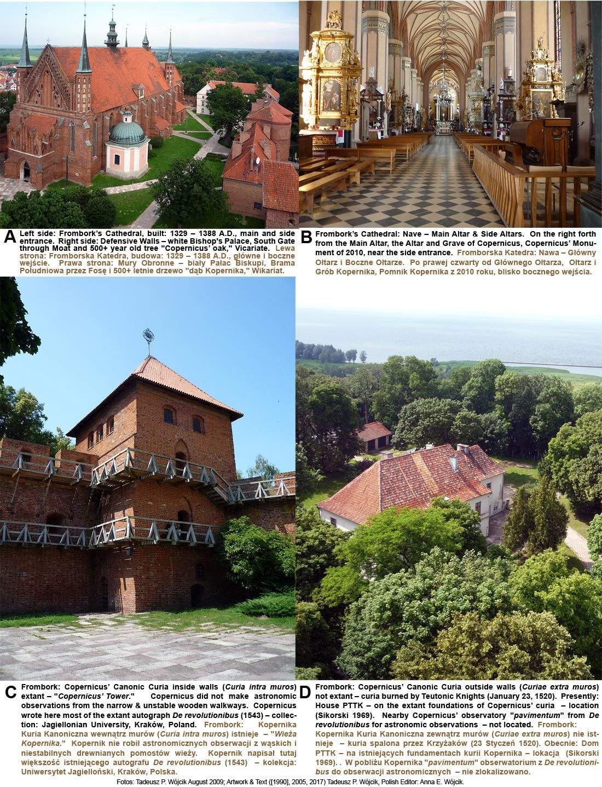
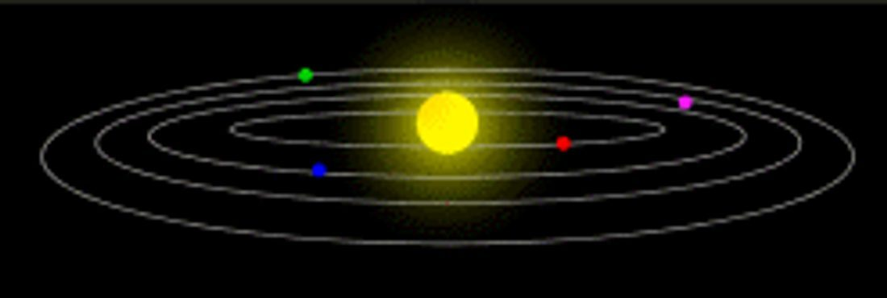
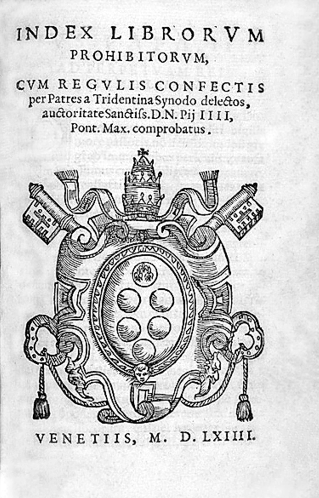
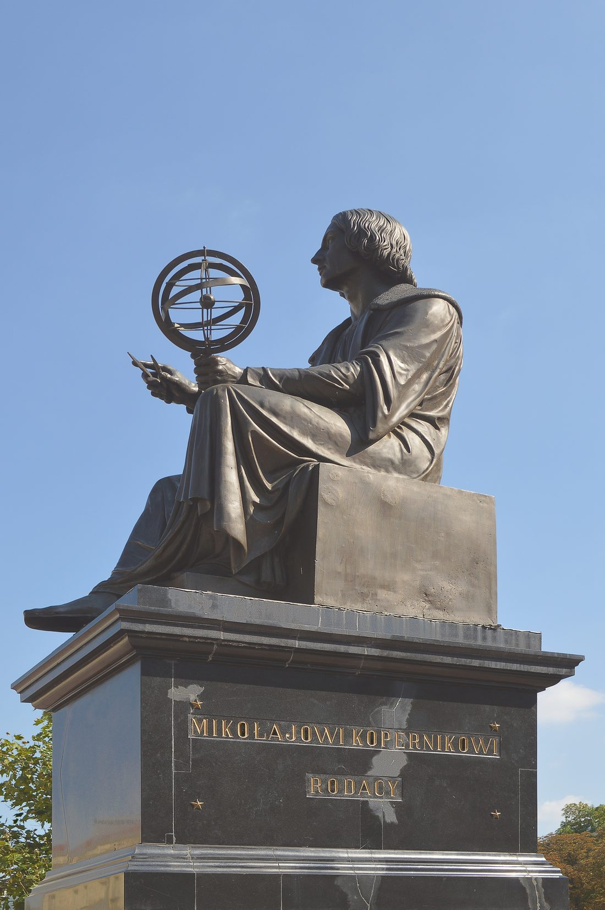

尼古拉·哥白尼（1473—1543），波兰托伦人。他学过法律、医学和神学，却把最多心思花在星星上。
他一生大部分时间是个安静的教士兼医生，利用业余时间观测、计算，慢慢拼出一个大胆的想法：太阳，而不是地球，才是宇宙的中心。
他犹豫了很久才把想法写进书里；书出版时，他已躺在病床上，只来得及用目光与自己的著作告别。
生于托伦
2 月 19 日，尼古拉·哥白尼生于维斯瓦河畔的托伦。少年丧父后，由舅舅抚养，走上求学之路。
拿到学位，回乡任职

取得教会法学位后回到波兰，担任神职人员（教士），在安稳的职务之余持续观测星空。
体系渐成

经过数十年观测与计算，完整的日心体系日渐成熟：太阳居中、地球自转并公转、行星按次序绕行。
被列为禁书

教会判定日心说“荒谬且与经文冲突”，《天体运行论》被列为禁书。思想的反扑，来得比预想猛烈。
从禁书目录移除

《天体运行论》终于从教会禁书目录中移除。两个多世纪后，世界承认：那双“看天的眼睛”，确实换对了。
全站所有带虚线下划线的词都可以点击。下面这些也行，试试看。
面向中学生的科普小站：按时间顺序讲故事，把难词讲成人话。每个核心概念都能点开弹窗看通俗解释；想深入就读“详解页”；想动手就玩“实验”；不确定哪个词什么意思，去词典里搜。